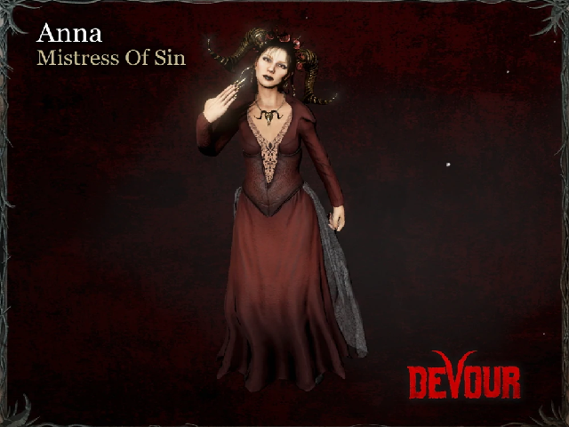

ANNA PUERTAContentsHumanLeft Mexico in 2004 to serve as the cult's leader. Former ballet dancer. Really likes telling people what to do. AppearanceAnna is of average height with black hair. PossessedAfter her sucession as the leader of The Watchers in 2004, she became obssessed with summoning Azazel himself. For 2 years, Anna experimented with rituals found in ancient texts as she searched for a way to raise the goat demon. AppearancePossessed Anna, like most of The Possessed, is considerably taller than her human counterpart. She has scars in the form of a Glasgow smile, yellow teeth and all-white eyes. She is wearing a very filthy gown presumably stained with blood and pus. Purchasable Outfits |
|